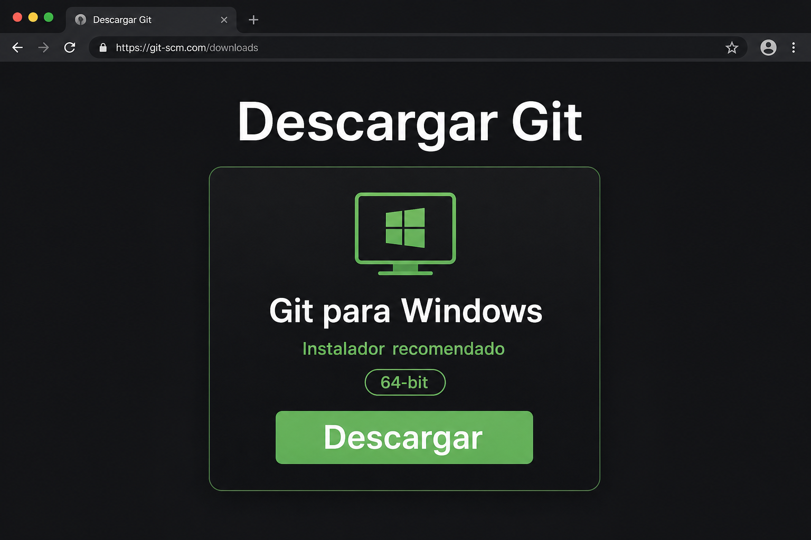
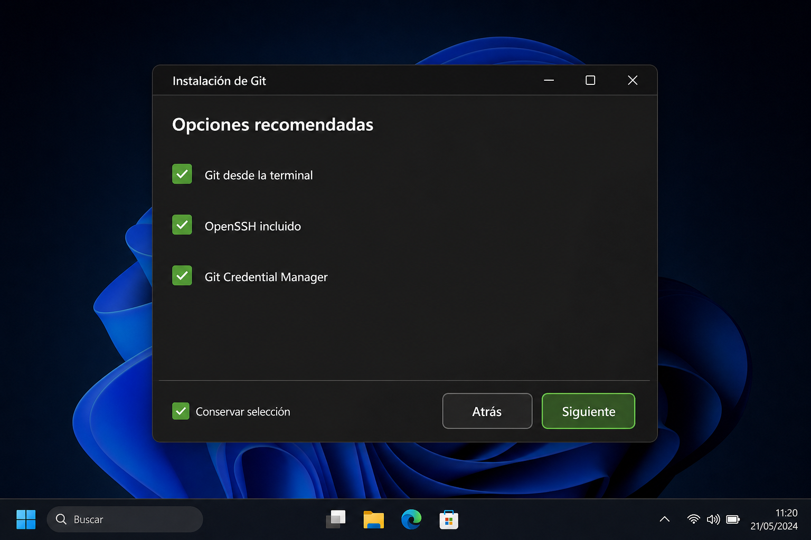
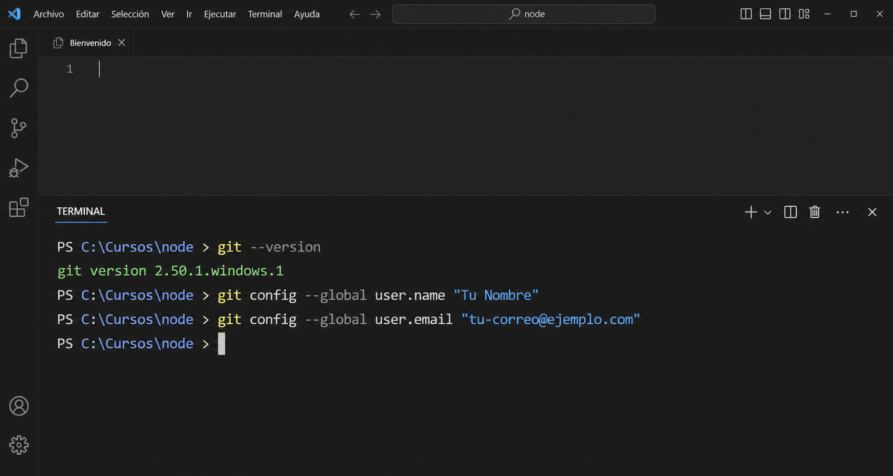

FUENTE OFICIAL
Descargá Git para Windows
Entrá en la página oficial de Git para Windows ↗ y descargá el instalador recomendado.
En la mayoría de las computadoras actuales corresponde la opción de 64 bits. Si el equipo pertenece a la institución o no estás seguro, consultá antes de instalar.

Descargá únicamente desde el sitio oficial. La página debe indicar claramente Git para Windows.
INSTALACIÓN ESTÁNDAR
Conservá las opciones recomendadas
Abrí el archivo descargado y avanzá con Siguiente. No necesitás cambiar la carpeta de instalación, el editor predeterminado, el método de conexión ni las opciones avanzadas.
Debe quedar agregado al PATH.
Conservá la configuración predeterminada.
Mantené la opción recomendada.

La captura resume las opciones importantes. Las selecciones predeterminadas son suficientes para este recorrido.
COMPROBACIÓN INICIAL
Reiniciá VS Code y verificá Git
Cerrá por completo Visual Studio Code, volvé a abrirlo y creá una terminal nueva. Ejecutá el siguiente comando:
git --version
Una respuesta que comienza con git version confirma que la instalación está disponible. El número exacto puede variar.
AUTORÍA DE LOS COMMITS
Configurá tu identidad
Antes de guardar la primera versión, indicá el nombre y el correo que Git agregará a tus commits. La opción --global aplica esta configuración a los próximos proyectos de tu usuario en esta computadora.
Completá tus datos
Los datos se usan solamente para formar los comandos en esta página. No se envían a ningún lugar.
git config --global user.name "Tu Nombre"
git config --global user.email "tu-correo@ejemplo.com"
git config --global init.defaultBranch main
Estos comandos normalmente no muestran una respuesta. Si el prompt vuelve sin un error, Git guardó la configuración.
LECTURA DE CONFIGURACIÓN
Comprobá los datos guardados
Consultá cada valor por separado. La terminal debe devolver el nombre, el correo y la rama inicial configurados.
git config --global user.name
git config --global user.email
git config --global init.defaultBranchTu nombretu-correo@ejemplo.commainSI ALGO NO FUNCIONA
Primero identificá el problema
git no se reconoceLa terminal estaba abierta antes de instalar o Git no se agregó al PATH.
Reiniciá VS Code. Si continúa, ejecutá nuevamente el instalador con las opciones recomendadas.Access deniedLa cuenta de Windows no tiene permisos para completar la instalación.
No cambies permisos del equipo: pedí asistencia al responsable del aula.Dato incorrectoEl nombre o correo quedó escrito con un error.
Volvé a ejecutar el comando correcto; el nuevo valor reemplazará al anterior.Confirmá la preparación
Ya podés continuar con la creación de tu cuenta de GitHub.